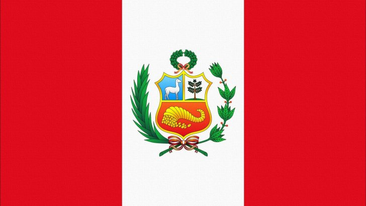

Nefi Moroni Escobedo Miranda
About Me
Hello! My name is Nefi Moroni Escobedo Miranda. I am 23 years old and I live in Arequipa, Perú. I am currently studying Chemical Engineering and Software Development.
I am interested in combining science and technology to solve real-world problems. My goal is to become a researcher in the future, pursue a master's degree and a PhD abroad, and work in research-oriented companies where I can combine my knowledge of engineering and systems to develop innovative solutions.
In addition, I had the opportunity to serve a mission in Trujillo, Peru, where I was the Secretary of Health. This role allowed me to work closely with the mission president, participate in various leadership councils, and develop organizational, communication, and leadership skills that have strongly contributed to my personal growth.

Peru

Peru is a country in South America known for its rich history, including the Inca civilization and Machu Picchu. It has diverse geography ranging from the Andes mountains to the Amazon rainforest. Peru is also famous for its culture, cuisine, and traditions.